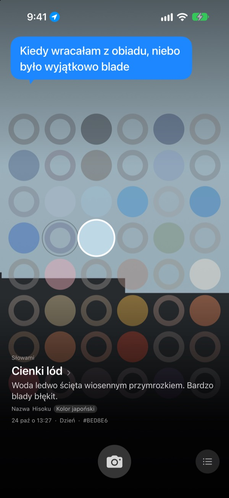
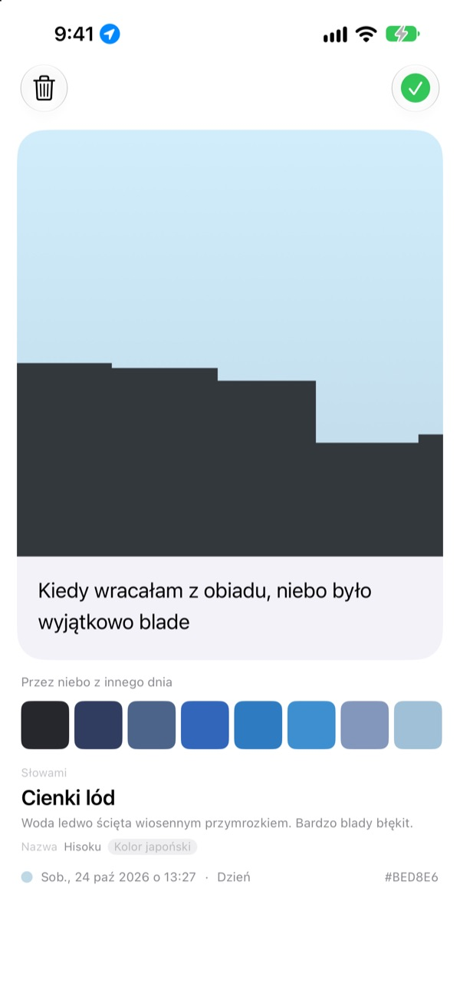
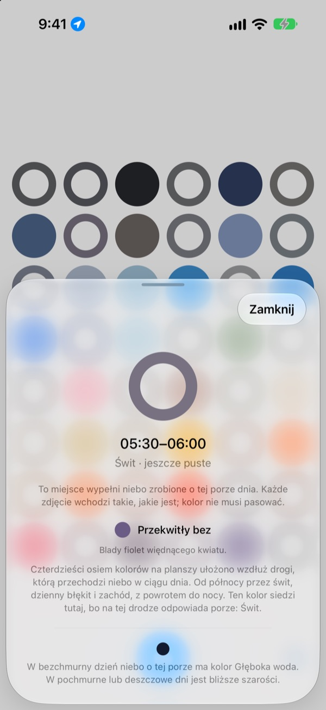
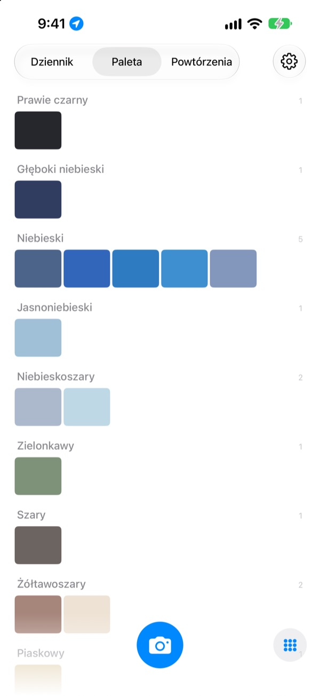

Jaki kolor miało
dziś niebo?
Zrób zdjęcie nieba, a na tablicy z czterdziestu ośmiu pól pole tej pory dnia wypełni się złapanym kolorem. Kolor dostanie też nazwę, którą łatwo zobaczyć oczami wyobraźni: cienki lód, płytki basenowe, dojrzały kaki.
Za darmo. Bez konta i bez logowania.

Wypróbuj tablicę
Dotknij pola, żeby zobaczyć, do jakiej pory dnia należy. Dodaj zdjęcie nieba, a wypełni się pole na tę chwilę. Potem przesuń dni do przodu i zobacz, jak zmienia się tablica.
Patrzysz na niebo codziennie, a nie pamiętasz ani jednego koloru
Niebo w drodze do pracy, niebo w drodze z lunchu: wieczorem po tych kolorach nie ma już śladu. A zdjęcia nieba, które jednak udało się zrobić, giną wśród wszystkich innych w galerii. SkyDex zbiera je jako kolory i pokazuje na jednej tablicy, jaką drogę przeszło dziś niebo.
Każde niebo dostaje nazwę
Każdy kolor dostaje najpierw nazwę, którą widać oczami wyobraźni, jak cienki lód, płytki basenowe czy dojrzały kaki. Pod nią pojawia się nazwa z pochodzeniem: kolor koreański, kolor japoński, pigment albo kolor webowy.
Gdy trafienie jest bliskie, widnieje przy niej Nazwa, a gdy nie, uczciwie Najbliższa nazwa.

Zostaw linijkę
Karta otwiera się zaraz po zrobieniu zdjęcia. Zapisz myśl, która przyszła ci do głowy przy patrzeniu w górę, a wróci nad niebem za każdym razem, gdy dotkniesz tego pola na tablicy.
Możesz też nałożyć na to zdjęcie kolor nieba z innego dnia i udostępnić efekt jako obraz.

Puste pola wskazują drogę
Dotknij pustego pola, a zobaczysz, do jakiej pory dnia należy i jakiego koloru szukać. Pole powie ci też, jak wygląda niebo o tej porze w bezchmurny dzień, według wschodu i zachodu słońca tam, gdzie jesteś.
Kolor nie musi się zgadzać. Szarość pochmurnego dnia też jest kolorem nieba tego dnia.

Dziennik, paleta, powtórzenia
Przeglądaj swoje nieba po kolei i zbieraj kolory w palety, takie jak niebieski, szary czy piaskowy. Sfotografuj tę samą godzinę innego dnia, a oba nieba staną obok siebie.
Widżety na ekranie początkowym pokazują dzisiejszą tablicę i dzisiejsze niebo na pierwszy rzut oka.

Na start wystarczą trzy kroki
- 1
Spójrz w górę
Dotknij przycisku aparatu pod tablicą i pozwól, by niebo wypełniło kwadrat.
- 2
Pole się wypełnia
Pole na tę chwilę dostaje złapany kolor i nazwę.
- 3
Zostaw linijkę
Na karcie, która się otworzy, zapisz, co chodziło ci po głowie.
Tak tablica dzieli dzień
- Północ · 0:00–5:00
- sześć pól
- Świt · 5:00–8:00
- sześć pól
- Dzień · 8:00–16:00
- dwanaście pól
- Późne popołudnie · 16:00–18:00
- sześć pól
- Zachód · 18:00–21:00
- dwanaście pól, jedno co 15 minut
- Noc · 21:00–24:00
- sześć pól
Wokół zachodu słońca, gdy niebo zmienia się szybko, pola leżą gęsto, a w środku nocy, gdy prawie stoi w miejscu, są szerokie. Na górze jest północ, a dzień płynie w dół.
Pytania
Jak wypełnia się pole?
Niebo sfotografowane dziś wypełnia pole godziny, o której powstało zdjęcie, nawet jeśli kolor nie jest taki, jakiego się spodziewasz. Tak właśnie wyglądało wtedy niebo. Nieba z wcześniejszych dni trafiają na tablicę według koloru: jeśli któreś jest dość blisko koloru danego pola, wypełnia je, a każde niebo wypełnia tylko jedno pole.
Pole, które wczoraj było pełne, dziś jest puste.
Tablica to zawsze dzisiaj. Pole, które wczorajsze niebo wypełniło według godziny, po zmianie dnia jest dopasowywane od nowa już tylko po kolorze. Dlatego jednego dnia tablica jest prawie pełna, a innego wygląda na pustą. Twoje zdjęcia nigdzie nie zniknęły: wszystkie nieba są w Dzienniku, a uporządkowane według koloru w Palecie.
Wypełnione pola blakną.
To celowe. Zdjęcie przez tydzień zachowuje prawdziwy kolor, a potem przez kolejne osiem tygodni powoli blaknie. Nie jest usuwane i nigdy nie blaknie do końca. Sfotografuj niebo o tej porze jeszcze raz, a pole od razu wróci do pełnego koloru. Żadnej serii do przerwania, żadnych punktów do odrabiania.
Czy kolor musi pasować?
Nie. Nie ma zaliczenia ani oblania. Każde zdjęcie się zapisuje, a szarość pochmurnego dnia też jest kolorem nieba tego dnia.
Po co aplikacji moja lokalizacja?
Tylko po to, by po dotknięciu pustego pola powiedzieć ci, jak o tej porze wygląda bezchmurne niebo, według wschodu i zachodu słońca tam, gdzie jesteś. Używa przybliżonej lokalizacji z dokładnością do kilometrów, a współrzędne nigdy nie są dołączane do zdjęć. Jeśli odmówisz, wszystko działa dalej, a punktem odniesienia jest Seul.
Czy mogę dodać niebo z biblioteki zdjęć?
Tak. Niebo wybrane w Zdjęciach zamiast aparatu też zostanie przycięte do kwadratu i wypełni pole na tę chwilę, tak samo jak to, które właśnie fotografujesz.
Jak usunąć zdjęcie?
Otwórz zdjęcie i dotknij Usuń albo przesuń je w lewo w Dzienniku. Znika jednocześnie z urządzenia i z iCloud. Jeśli usuniesz aplikację, kopia w iCloud zostaje, więc po ponownej instalacji twoje nieba wrócą.
Co się stanie, gdy zmienię telefon?
Zebrane nieba są zapisane w twoim własnym iCloud, więc przechodzą na nowe urządzenie zalogowane na to samo konto Apple. Nie ma osobnego konta ani serwera, a zdjęcia i kolory nigdy nie trafiają do dewelopera. Bez reklam i bez śledzenia.
Czy to naprawdę za darmo?
Tak, wszystkie funkcje są bezpłatne. Jeśli aplikacja ci się spodoba, możesz w niej dać deweloperowi napiwek, ale napiwek niczego nie odblokowuje.
Na jakich urządzeniach działa?
Na iPhonie z iOS 17.0 lub nowszym, tylko w pionie.
Błędy, dziwne zachowanie albo cokolwiek, co chcesz powiedzieć: napisz na leeo@kakao.com. Jeśli dodasz, co się wtedy działo i jaką masz wersję iOS, dużo łatwiej będzie znaleźć przyczynę.